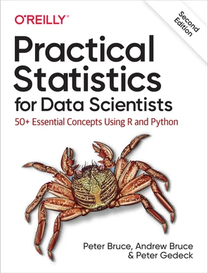

Análisis de Soporte al Cliente
Bitext Customer Support Dataset · pandas + Plotly
26,872
Consultas analizadas
11
Categorías
27
Intenciones
22.3%
Volumen en ACCOUNT

Inspiración: este análisis se inspiró en los conceptos y lineamientos de
Practical Statistics for Data Scientists, 2nd Edition
(Peter Bruce, Andrew Bruce & Peter Gedeck, O'Reilly) — aplicados a un caso real.
Estadística Descriptiva
La longitud de respuesta muestra asimetría positiva marcada (1.7) y curtosis alta (3.7) — la mayoría de respuestas son cortas, pero una cola de casos extensos empuja la media (634) por encima de la mediana (540). La longitud de instrucción, en cambio, es casi simétrica (-0.2) y con curtosis cercana a la normal (0.4).
01
Distribución de consultas por categoría
ACCOUNT concentra el mayor volumen (5,986 filas, 22.3%) — la principal candidata para priorizar automatización.
02
Longitud de respuesta por categoría
REFUND muestra la mayor dispersión (desvío estándar de 566, casi igual a su mediana) — casos que van de simples a muy extensos.
03
Jerarquía de categorías e intenciones
ACCOUNT no solo lidera en volumen, también en variedad: 6 de las 27 intenciones totales.
04
Forma de la distribución de longitud de respuesta
El violin plot revela si la variabilidad de REFUND corresponde a una distribución bimodal o simplemente amplia.
05
Longitud de instrucción vs. longitud de respuesta
Correlación de apenas 0.11 — la extensión de la consulta no predice la extensión de la respuesta.
06
Mapa de calor: categoría × intención
Vista compacta de qué combinaciones de categoría e intención concentran más volumen.
07
Panel resumen
Cuatro métricas clave combinadas en un solo vistazo: volumen, longitud mediana, cantidad de intents y top intents.
08
Comparación multidimensional por categoría
Volumen, longitud mediana y cantidad de intents normalizados en un mismo radar por categoría.